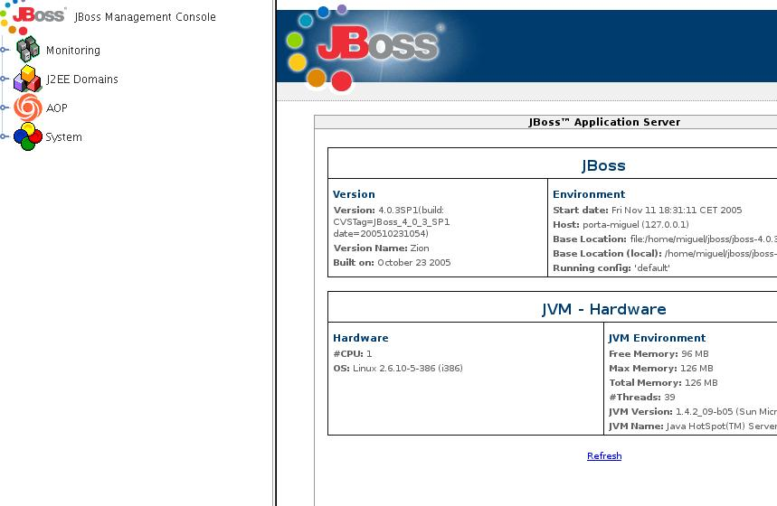

Servidor de aplicaciones JBoss
Introducción
Como ya hemos comentado, existen varios servidores de aplicaciones que cumplen las especificaciones J2EE. Bea WebLogic es uno de ellos, pero es necesario obtener una licencia para su uso. Existen otros cuyo uso es libre. En este tema vamos a ver las características, instalación y configuración de uno de los más usados, el servidor JBoss en su versión 4.0. No entraremos en tanto detalle como en WebLogic, sino que veremos los puntos en común y las diferencias con WebLogic.
Características de JBoss
JBoss empezó como un contenedor de EJBs y ha evolucionado a un servidor de aplicaciones completo. Las principales características de JBoss son:
- Cumple con las especificaciones J2EE 1.4.
- Permite el clustering de EJBs y aplicaciones web.
- Incorpora la programación orientada a aspectos (AOP).
- Hace uso de Tomcat como contenedor de servlets.
- Su uso es libre y se distribuye en código abierto.
- La documentación disponible es amplia.
- Existen multitud de proyectos relacionados con JBoss, como Hibernate y un IDE para Eclipse.
La distribución binaria de JBoss contiene los siguientes directorios:
- bin: contiene los scripts de arranque y parada del servidor y algunos otros que veremos más adelante. Existen scripts duplicados: por ejemplo, tenemos el run.sh (para sistemas Unix) y run.bat (para sistemas Windows).
- client: contiene ficheros de configuración y librerías (.jar) las cuales pueden ser usadas por una aplicación cliente. El fichero jbossall-client.jar es el que contiene el resto de librerías.
- docs: información sobre JBoss: DTDs, ejemplos, licencias, etc.
- lib: librerías .jar para el funcionamiento de JBoss. No es aconsejable incorporar aquí nuevas librerías.
- server: cada directorio dentro de éste es una configuración de servidor distinta. Por defecto vienen tres: minimal es el arraque con el mínimo número de componentes (no incorpora EJBs, JMS, contenedor web); standar (default) no incluye JAXR, RMI/IIOP ni servicio de clustering; all arranca todos los servicios.
Instalación y ejecución
La instalación es muy sencilla y salvo problemas de configuración de variables no tiene que dar ningún problema. Lo primero es descargárselo de su página http://www.jboss.org Podemos descargar una versión binaria o el código fuente para compilar. La versión binaria suele ser suficiente para empezar a trabajar. Una vez descargada simplemente la descomprimimos en cualquier directorio de nuestro sistema (por ejemplo /usr/local). JBoss requiere Java JDK 1.4 o superior y la variable JAVA_HOME debe estar inicializada con el directorio donde tengamos instalado JDK. También el ejecutable de Java debe estar en el path.
Entramos en el directorio bin de JBoss y ejecutamos un script llamado run.sh (caso de sistemas Linux) o run.bat (caso de Windows). Si todo va bien (no hay errores) deberá aparecer un mensaje como el siguiente (cambiando algunos datos):
11:29:39,944 INFO [Server] JBoss (MX MicroKernel) [4.0.0 (build: CVSTag=JBoss_4_0_0 date= 200409200418)] Started in 1m:18s:941ms
El servidor ya está arrancado y escuchando peticiones. El puerto por defecto es el 8080 (debemos de verificar que no hay otra aplicación escuchando en el mismo puerto). Ahora abrimos un navegador y escribimos http://localhost:8080/jmx-console Esta es la consola de administración.
Pinchando sobre un servicio (por ejemplo, dentro de jboss service=JNDIView) nos muestra los métodos a los que se puede llamar de ese MBean. Si el método admite parámetros, se puede introducir el valor. En el caso anterior (JNDI) nos permite visualizar el árbol JNDI.
Las llamadas que se ven son MBeans (beans de gestión) que son los que gestionan todas las operaciones en el servidor. Podemos modificar su configuración así como parar o poner en marcha servicios. Existe otra consola (llamada consola web) que dispone de un applet a la izquierda. Su aspecto es el siguiente.

El servidor se puede parar de tres maneras distintas: con ctrl+C en el terminal donde lo hemos arrancado; ejecutando el script shutdown del directorio bin o en la consola buscamos type=server en la sección jboss.system y ejecutamos halt.
Configuración de servicios
Configuración de servidor
Como ya hemos comentado, existen tres tipos de servidores predefinidos. Podemos arrancar uno u otro simplemente pasando el parámetro -c nombre_servidor al script de arranque. Por ejemplo, con run.sh -c all arrancamos el servidor que contiene todos los servicios. Cada directorio dentro del directorio server contiene lo necesario para gestionar el servidor. La estructura de directorios es la siguiente dentro de un servidor es la siguiente:
- conf: contiene ficheros de configuración (como el jndi.properties) de servicios
- data: almacena los datos de la BD Hypersonic y la implementación de JMS
- deploy: es donde debemos copiar las aplicaciones que queremos que despliegue JBoss. También contiene las fuentes de datos, servicios de correo, etc. Este directorio se comprueba constantemente en busca de nuevas aplicaciones.
- lib: directorio que contiene las librerías adicionales necesarias para funcionar. Por ejemplo, aquí será donde copiemos los driver JDBC.
- log: ficheros log del sistema
- tmp: directorio temporal usado en el despliegue de aplicaciones
- work: usado por Tomcat para la compilación de JSPs.
Si queremos crear un nuevo servidor (para cambiar su configuración), lo habitual es copiar uno de los directorios dentro de server. Dentro del nuevo directorio debemos editar los ficheros de configuración para decir qué servicios queremos que estén activos y cómo se deben configurar.
Despliegue de una aplicación
El despliegue de una aplicación es muy sencillo. Se copia el fichero (.war, .ear, .jar) en el directorio deploy del servidor. Si el servidor está en marcha, al cabo de unos segundos sacará mensajes como que ha realizado el despliegue. Si queremos quitar la aplicación, simplemente borramos el fichero y el servidor elimina la aplicación. Podemos volver a desplegar la misma aplicación. El redespliegue no funciona bien (necesita rearrancar el servidor), por lo que conviene borrar el fichero y volverlo a desplegar.
Acceso a una BD
Como ya vimos con el servidor WebLogic, una BD se puede acceder desde dentro del servidor (desde una aplicación desplegada) o bien desde una aplicación cliente. Para ambas, lo primero es configurar la fuente de datos. Detallamos los pasos para crear una fuente de datos:
- Copiar el driver (connector) para la base de datos a usar al directorio server/default/lib (si usamos el servidor default).
- Hay que definir la fuente de datos en un fichero xml. Existen ejemplos de fuentes de datos para las BD más usadas, en el directorio docs/examples/jca Un posible ejemplo (para MySQL) es el siguiente:
<datasources>
<local-tx-datasource>
<jndi-name>MySQLDS</jndi-name>
<connection-url>jdbc:mysql://localhost:3306/BD</connection-url>
<driver-class>com.mysql.jdbc.Driver</driver-class>
<use-java-context>false</use-java-context>
<user-name>admin</user-name>
<password>admin</password>
</local-tx-datasource>
</datasources>
- jndi-name es el campo lógico ligado a esta fuente de datos.
- connection-url es la url tal como la vimos en JDBC
- use-java-context Si cierto, esta fuente de datos sólo será accesible desde aplicaciones desplegadas en el servidor. La forma de acceder al recurso será con java:MySQLDS Si falso, será accesible desde aplicaciones cliente externas al servidor y se accederá con MySQLDS
- Nombre y contraseña del usuario de la BD
- Esta fuente de datos es local y admite transacciones (local-tx-datasource). Existen otros tipos de fuentes de datos. Consultar el manual.
El fichero anterior se puede llamar, por ejemplo, mysql-ds.xml Se tiene que copiar al directorio deploy del servidor que estemos usando. Una vez desplegado en el servidor, ya será accesible a través de JNDI.
Ahora vamos a ver cómo podemos acceder desde un programa Java. Tanto si nuestra aplicación es de servidor (se desplegará en el servidor) como si es un cliente externo, nuestro código es el mismo:
Context miContexto = new InitialContext ();
DataSource ds = (DataSource) miContexto.lookup ("java:MySQLDS");
Si nos fijamos en el nombre, java:MySQLDS, este nombre lo usaríamos si tenemos el valor de use-java-context a cierto.
En el caso de estar desarrollando una aplicación externa, debemos hacer dos cosas. La primera es crear un fichero con nombre jndi.properties que lo dejaremos en el classpath de nuestra aplicación. El contenido del fichero será el siguiente:
java.naming.factory.initial=org.jnp.interfaces.NamingContextFactory java.naming.provider.url=jnp://localhost:1099 java.naming.factory.url.pkgs=org.jboss.naming:org.jnp.interfaces
Este fichero indica qué clases van a gestionar JNDI y quién va a proporcionar. En el caso de JBoss, el servicio que proporciona el árbol JNDI se encuentra en el puerto 1099 del servidor.
Lo segundo que tenemos que hacer es incluir la librería con las clases de JBoss para gestionar JNDI. Debemos incluir en el classpath el fichero client/jbossall-client.jar
Instalación de la aplicación Duke's Bank
El tutorial de J2EE de Sun incorpora una aplicación llamada Duke's Bank, que demuestra las posibilidades de varias tecnologías J2EE, tales como EJB, componentes web y acceso a BD, creando una aplicación de un banco. Como ejemplo, vamos a realizar las tareas necesarias para hacer funcionar esta aplicación bajo JBoss y poder consultar algunas características del servidor.
Descargad la plantilla de esta sesión y descomprimidla. La aplicación se encuentra en un directorio (es un proyecto de Eclipse) llamada DukeBank. La importáis como proyecto de Eclipse. Editamos el fichero jboss-build.properties y asignamos el valor a la variable jboss.home para que apunte al directorio donde tengamos instalado JBoss. Si usamos un servidor distinto de default debemos indicarlo en la variable jboss.server.
# Set the path to the JBoss directory containing the JBoss application server
# (This is the one containing directories like "bin", "client" etc.)
jboss.home=/usr/local/j2ee/jboss
jboss.server=${jboss.home}/server/default
jboss.deploy.dir=${jboss.server}/deploy
Ahora vamos a ejecutar algunos comandos del fichero Ant llamado jboss-build.xml. En concreto tenemos que seguir los siguientes pasos:
- ant -f jboss-build.xml compile Compilamos los fuentes.
- ant -f jboss-build.xml package-ejb Empaquetamos los EJBs.
- ant -f jboss-build.xml package-web Empaquetamos la web.
- ant -f jboss-build.xml assemble-app Empaquetamos la aplicación completa.
- La aplicación usa una BD propia de JBoss: Hypersonic. Primero hay que crear la fuente de datos correspondiente. Vamos a docs/examples/jca y copiamos el fichero hsqldb-ds.xml al directorio de despliegue del servidor. Antes tenemos que editarlo para permitir las conexiones externas. En la línea 88, debemos descomentar el mbean para permitir conexiones externas. También en la línea 16 debemos descomentar esa línea. Una vez desplegada la fuente de datos podemos crear la BD que va a usar la aplicación. La aplicación
contiene los comandos SQL necesarios para crear la BD (tened en cuenta que
JBoss debe estar funcionando):
- ant -f jboss-build.xml db-create-table Crea las tablas.
- ant -f jboss-build.xml db-insert Inserta los datos.
- ant -f jboss-build.xml db-list Si la creación ha sido correcta debemos ver un listado con datos.
- Podemos lanzar un gestor de BD llamado HSQL. Para ello, en la consola jmx vamos a jboss, service=Hypersonic e invocamos a startDatabaseManager. Nos aparecerá una imagen como la siguiente. Podemos ejecutar comandos SQL para consultar las distintas tablas.
Ya sólo queda desplegar la aplicación. Ejecutamos
ant -f jboss-build.xml deploy
Este comando únicamente copia el fichero JBossDukesBank.ear en el directorio server/default/deploy que es donde se encuentran las aplicaciones del servidor. Con sólo copiar el fichero al cabo de un momento el servidor desplegará la aplicación.
La aplicación se puede probar de dos maneras distintas. La primera es desde el navegador. Escribimos la dirección http://localhost:8080/bank/main y nos tiene que aparecer una ventana de identificación como la siguiente:
Podemos usar el cliente 200 con contraseña j2ee. Entramos en la aplicación, donde podemos consultar las cuentas del cliente y hacer movimientos entre ellas.
Vamos a echar un vistazo al árbol JNDI del servidor, para comprobar los EJBs de la aplicación. Para abrir el árbol JNDI vamos a la consola jmx, en el apartado jboss, service=JNDIView e invocamos a list(). Nos tiene que aparecer una ventana como la siguiente.
La otra forma de usar la aplicación es con un cliente Java puro. Desde Eclipse, ejecutamos ant -f jboss-build.xml run-client y nos aparecerá la siguiente aplicación:
También podemos consultar los clientes y sus cuentas.